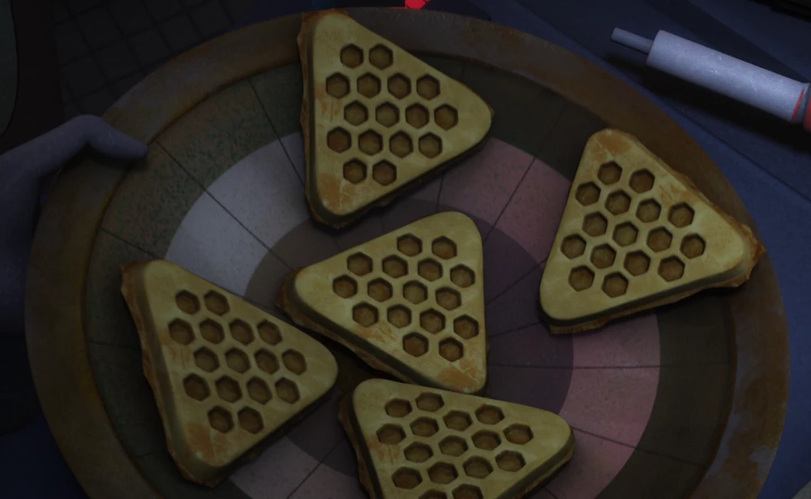
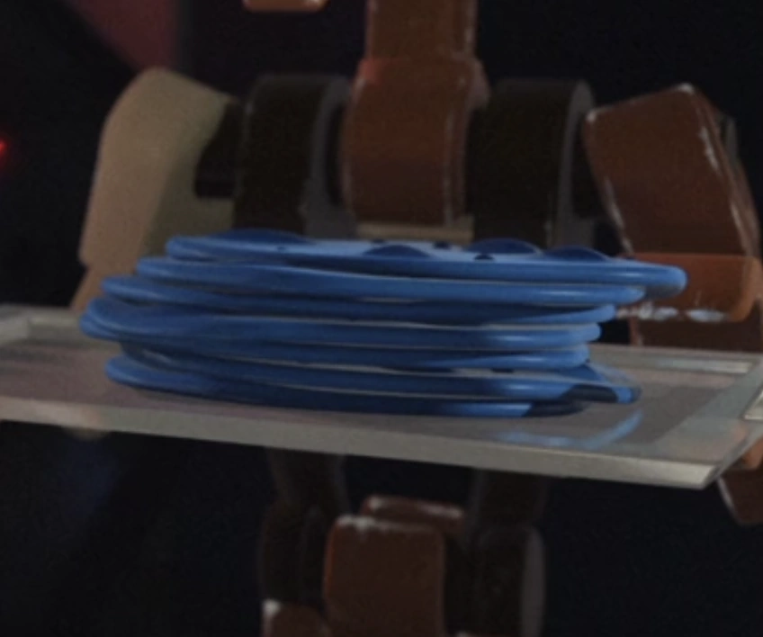
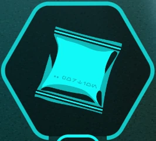
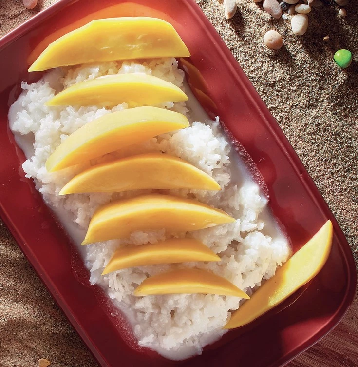
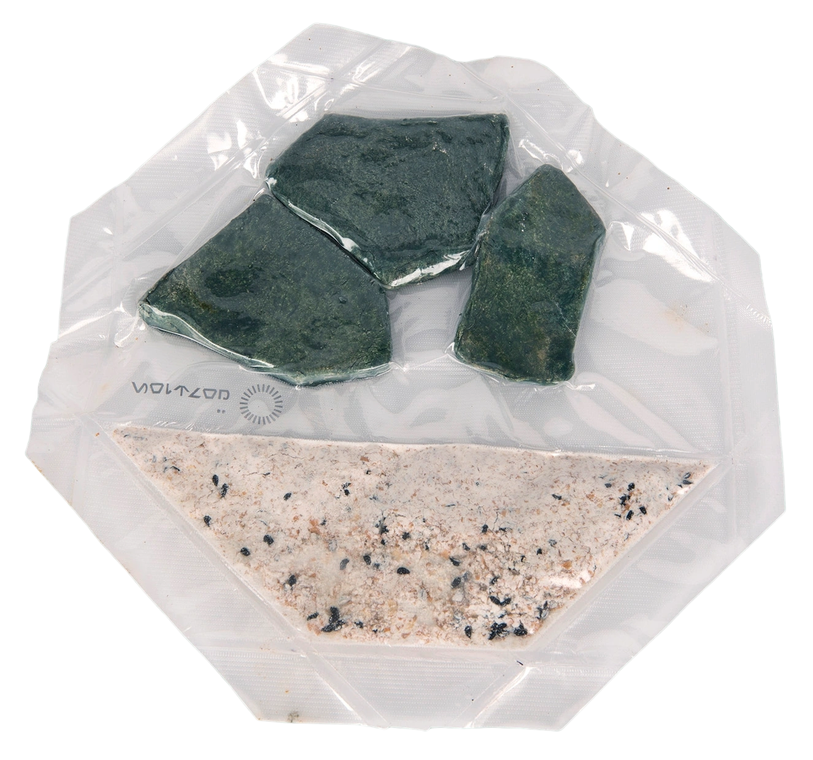

Breakfast
Meals
Space Waffles
Space Waffles

9ᖬ"Can we eat? I'm starving." "Let me in there! [sniffs] Mm." ― Gooti Terez and Jonner Jin express their enthusiasm for space waffle
750 Calories
Blue Milk Pancakes
Blue Milk Pancakes

13ᖬ"Forget the Empire's freeze-dried junk. These blue-milk pancakes are terrific!" "Finally, someone who appreciates my fine cuisine." ― Bren Derlin and R0-GR
850 calories
Nutrient_Pack
Nutrient_Pack

11ᖬ"And when you make contact, give them these nutrient packets." "Nothing like a home–cooked meal." "Essential minerals and enzymes. Keeps our carapace shiny." ― Ashiga Myrmitrix to Kay Vess
500 calories
Honey Hive Spear
Honey Hive Spear

15ᖬ"Geonosis is prob'ly best known as the original capital of the Confederacy durin' the early days of the Clone Wars, but I remember it for its glorious hives drippin' with decadent honey" ― Strono Tuggs, The Ultimate Cookbook
800 calories
Mygeeto Burrito
Mygeeto Burrito
"Finally, someplace that knows how to make a decent Mygeeto burrito." "Yeah, go figure it'd be on Mygeeto, huh?" ― Baash and Raam
1,300 calories
Ration Pack
Ration Pack

12ᖬ"Why do you bring so little real food?" "Jobs like this one usually don't give you enough time to prepare it or enjoy it. We'll be working nonstop and on alert at all times once we hit atmosphere. Food's just fuel then." ― Luke Skywalker and Nakari Kelen
1,000 calories